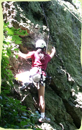

|  |
|
| |
| Nira's 40-foot rock face has two hardware-equipped routes,
and offers some great climbing right in Jamaica Plain.
|
|
Nira Rock is a secluded haven, right in the heart of the city. Though
it covers less than two acres, Nira Rock offers:
• Two challenging rock-climbing trails with climbing hardware.
• An orchard where you are welcome to sample the apples, pears,
plums, cherries, raspberries and blueberries.
• A hilltop meadow and shady spots to stroll or picnic. Dogs are
welcome – and kids love it!
Of course, Nira Rock is best known for its striking 40-foot natural
wall of "Roxbury Puddingstone," a prized building material which was
quarried here for use in many of Boston's most celebrated structures and parks. (In
fact, outcroppings like Nira are what “Rox”-bury was named for.) But in
the last few years, the land surrounding the rockface has been replanted with a
profusion of native shrubs and trees, and paths have been improved, making Nira an
abundant, beautiful "pocket sanctuary" for wildlife and people alike.
Pitch in! Friends of Nira Rock is an all-volunteer organization. We're
always open to ideas and, of course, a ready pair of hands. Feel free to contact us if you have either!
Nira honored by the EcoTipping Points Project
We're proud to announce that Nira Rock has been officially designated
an "EcoTipping Point" – a place that changes a cycle of decline into
one of restoration, setting the entire environmental system on a new course. Go,
Nira! Learn more about EcoTipping points here!
We've been geocached!
Nira Rock is now officially part of geocaching � a global treasure
hunt for people who love to discover new places in nature (and have a GPS device
clipped to their belt!) We've already been "discovered" by many geocachers. To learn
more about geocaching or to read Nira Rock's description, click here.
|